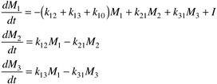

| [ Team LiB ] |
|
M12.2 Pharmacokinetic ModelsPharmacokinetics is the study of the dynamic behavior of drug concentrations in blood and tissues. Compartmental models are widely used to conceptually describe this behavior. One common 3-compartment model is shown in Figure M12-1. Figure M12-1. Three-compartment model.Compartment 1 is often used to represent blood plasma. The drug is assumed to be directly infused to compartment 1. The drug can then diffuse between compartment 1 and compartments 2 and 3, based on the transfer parameters, kij. For example, k12 represents the kinetics for transfer of the drug from compartment 1 to compartment 2. Compartment 2 can be thought of as well-perfused tissues, such as muscle and brain, while compartment 3 represents residual tissues and bone. Modeling EquationsIf we let I represent the mass infusion rate (mass/unit time) of the drug, the overall material balance can be written as  This has the form of a state space model One is normally concerned more about drug concentrations rather than the total amount of drug. The blood plasma concentration can be represented by C1 = M1/V1. The state space model for the measured output is then Alternatively, the states can be formulated as concentrations, resulting in the following model: |
| [ Team LiB ] |
|